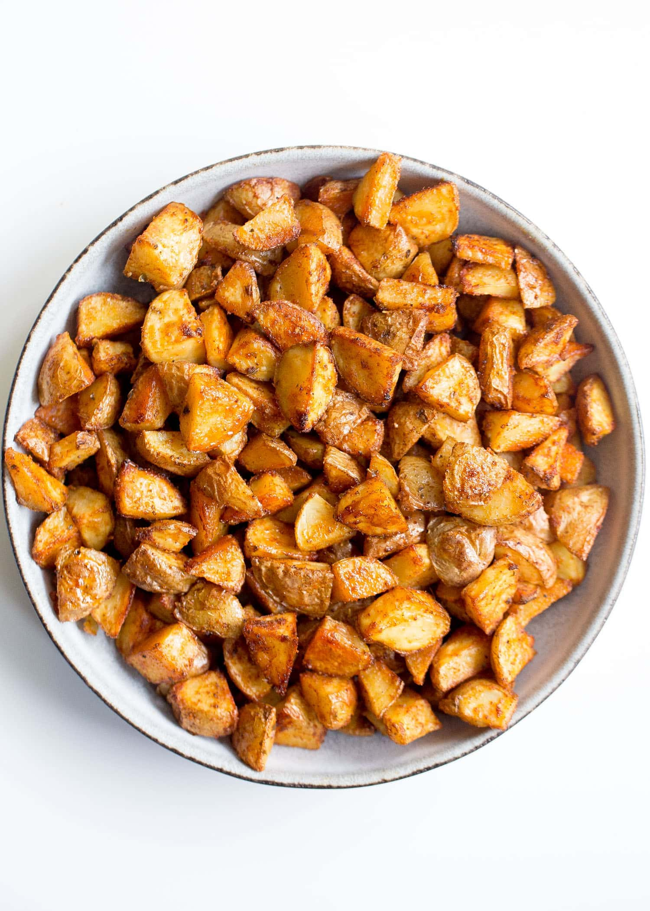

Roasted Potatoes

This is a basic recipe for incredible crispy potatoes. This recipe uses very few ingredients and takes about 1 hour to complete.
ingredients
- Gold potatoes 2-3lbs
- 2-3 tbsp olive oil
- salt and pepper
- Avacado or ghee spray for the pan
Directions
- Cut potatoes into 1" cubes and wash with cold water. Dry with paper towel after.
- mix cubed potatoes, 3 tbsp of oil, and salt and pepper into a large bowl
- Preheat oven to 400 degrees. Spread potatoes onto a sprayed baking sheet and cook and place in oven.
- Flip the potatoes after 25 minutes and then put them back into the oven for another 25 minutes until golden and cripsy.
- Enjoy!
Return to home